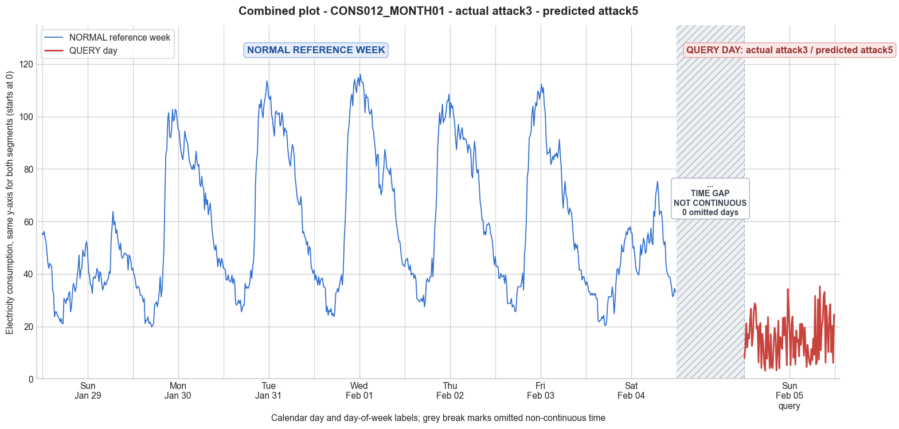

CONS012_MONTH01 · actual attack3 · predicted attack5
- Pair
- CONS012_MONTH01
- GT
- attack3
- Prediction
- attack5
- Binary GT
- attacked
- Binary Prediction
- attacked
- Source
- E010
- Parse
- stored
- Date
- 2012-02-05
- Weekday
- Sunday
- Latency
- 1.82 min
- Tokens
- 8932

Final output
Classification: - Manipulated Identified Attack: - Most Likely: Attack 5 - Confidence: High - Reasoning: The query day's consumption values are drastically lower than any day in the reference week (mean 15.64 vs minimum reference day mean 40.58) and exhibit a highly erratic pattern with no diurnal trend, many near-zero readings, and random spikes. This is inconsistent with scaling (Attack 1 or 3) which would preserve the original shape, or period‑specific reduction (Attack 4). Attack 5 perfectly matches the definition: each sample replaced by a random fraction of the average normal consumption, creating a completely unrelated pattern. Attack 3 was ruled out because the query day lacks any residual trend from the reference profile; Attack 12 was ruled out because a pattern swap would still show a realistic low‑consumption diurnal cycle, not the observed noise‑like behaviour. Attack_Behavior_Explanation: - How consumption values are manipulated relative to the normal week: Each original 15‑minute reading is replaced by a synthetic value drawn from [0, μ], where μ is the average normal consumption (approximately 58.99 based on the reference week). The resulting series is entirely decoupled from the true load curve. - Impact on magnitude and trend: Magnitude is severely reduced (mean dropped from ~40–68 to 15.64). The diurnal trend of low overnight and higher daytime usage is completely destroyed, leaving an irregular, flat profile with random fluctuations. - Possible technical causes: False data injection (malicious firmware or communication tampering) that substitutes genuine meter readings with fabricated low‑amplitude noise.
Prompt
You are a domain expert in smart grid security and electricity theft analysis, with deep knowledge of non-technical loss (NTL) attack patterns in smart meters. You are given: 1. A plot of one week of original (normal) energy consumption for a smart meter, provided as context for the customer's typical consumption behavior. 2. A plot of one day of energy consumption for the same smart meter, which may or may not be manipulated. Below are common attack types, each defined by how consumption values are altered, their impact on magnitude and trend, and their possible technical causes. Attack 0: Generated by replacing all electricity consumption samples with zero values for the entire observation duration. Simulates a scenario where no energy usage is reported at all. May be caused by a total meter bypass or severe meter malfunction. Completely eliminates both the trend and magnitude of the consumption profile. Attack 1: Multiplies the actual energy consumption by a constant random value between (0,1). The lower the factor, the higher the severity. Can be triggered by meter bypass, magnetic interference, reverse current, and false data injection. The consumption trend remains the same but the magnitude is uniformly reduced. Attack 2: Generated by replacing consumption samples with zeros for a random duration. Also known as an on-off attack. Can be caused by full meter bypass, false data injection, and reverse current. Changes both the trend and amplitude. Attack 3: The actual consumption is multiplied by different random factors between 0 and 1, with a unique factor per sample. Similar to Attack 1 but the scaling factor varies per reading. Caused by meter bypass, magnetic interference, and reverse current. Changes both the trend and amplitude. Attack 4: Simulates energy theft over a randomly selected period within the observation window. All measurements in that period are reduced. Caused by meter bypass, magnetic interference, reverse current, and false data injection. Changes both the trend and amplitude. Attack 5: Each sample is replaced by a false value obtained by multiplying the average normal consumption by a random variable between 0 and 1, with a different variable per sample. Caused by false data injection. Produces a completely different pattern from the original consumption profile, changing both trend and magnitude. Attack 6: A random cut-off point is selected and all consumption values above it are replaced by that cut-off value. The attacker avoids exceeding a predefined maximum limit. Mainly caused by false data injection. Changes both the trend and amplitude. Attack 7: A random cut-off point is subtracted from each sample; if the result is negative, zero is reported. Similar to Attack 6 but replaces exceeding values with zero instead of the cut-off point. May be caused by false data injection or total meter bypass. Does not change the trend but reduces overall consumption. Attack 9: All samples are replaced by the average daily energy consumption, resulting in a flat constant profile. Easily detectable because constant consumption does not reflect normal customer behavior. Caused by false data injection. Eliminates all trends. Attack 10: Reverses the consumption pattern without reducing the total amount. Applicable when the electricity company uses time-varying pricing, allowing the attacker to shift high consumption to off-peak periods. Caused by false data injection. Changes the trend without decreasing total consumption. Attack 12: The attacker replaces their consumption pattern with that of a lower-consuming user. The legitimate user unknowingly pays the adversary's electricity bill. Caused by false data injection. Attack IEEE: For each 15-minute interval across the entire day, the consumer either reports the actual electricity consumption or substitutes it with zero. The result is a profile where some intervals reflect real consumption while others are zeroed out, creating an irregular pattern across the full day. May be caused by false data injection. Changes both the trend and amplitude. Given the two plots, determine: 1. Whether the day is attacked or original - compare the flagged day against the normal week and assess whether the consumption pattern is consistent with normal behavior or shows signs of manipulation. If the day is consistent with the customer's typical consumption behavior, classify it as original and provide no further analysis. If manipulation is detected, proceed to point 2. 2. Which attack type this most likely is - identify the single most probable attack and justify your choice based on how the flagged day deviates from the normal week. 3. The behavior of the identified attack - explain how the consumption values are manipulated, their impact on magnitude and trend, and the possible technical causes behind this type of attack. Output Format: Classification: - Original | Manipulated Identified Attack: (fill only if manipulated) - Most Likely: Attack X - Confidence: High | Medium | Low - Reasoning: Why it matches Attack X and why Attack Y and Attack Z were ruled out (list top 2 alternatives considered) Attack_Behavior_Explanation: (fill only if manipulated) - How consumption values are manipulated relative to the normal week - Impact on magnitude and trend - Possible technical causes
Reasoning content
We are given reference week data for a smart meter (CONS_NO=12, MONTH_ID=1, WEEK_ID=1, DAY_ID=0) with minute-level readings over 7 days, and a query day (DAY_ID=0) that we need to classify as original or manipulated. The query day has statistics: min=3.07, max=35.26, std=8.24, mean=15.64. The reference week days have statistics shown: Day 0 (same DAY_ID=0 but in reference week? Actually the query day is DAY_ID=0 with cal_month=2, dow=6, dom=7, while reference week Day 0 had cal_month=1, dow=6, dom=0. So it's a different week. We need to compare the query day consumption pattern against the typical behavior observed in the reference week. We have actual 96 readings for each day. We can analyze the pattern. The reference week shows days with typical consumption: Day 0: min 21.06, max 63.82, mean 40.58, std 9.88. Day 1: min 19.78, max 102.74, mean 60.58, std 26.71. Day 2: min 25.53, max 113.59, mean 67.13, std 28.81. Day 3: min 23.61, max 116.15, mean 68.50, std 30.54. Day 4: min 27.44, max 108.49, mean 67.66, std 26.07. Day 5: min 25.53, max 112.32, mean 63.52, std 27.09. Day 6: min 20.42, max 75.30, mean 42.96, std 13.18. Overall, the consumption patterns have a daily cycle with low overnight (around 20-40) and higher during daytime and evening, with peaks around 100-116 on some days. The query day has a very low mean of 15.64, max only 35.26, min 3.07. That's drastically lower than any day in the reference week. Even the lowest reference day (Day 0) had mean 40.58, max 63.82. So the magnitude is hugely reduced. Also, the pattern: The query day readings are highly irregular, with many very low values (3.07, 4.02, etc.) and occasional spikes to around 30-35. This does not resemble a typical daily pattern of gradual increase and decrease. The reference week days show some consistency: overnight lows around 20-30, morning ramp-up, high afternoon peaks, evening decline. The query day seems to have random fluctuations with some values near 30-35 but mostly below 20, and many single-digit readings. This is not normal. Thus, it is manipulated. Now, which attack type? We have to consider the descriptions. Attack 0: All zero. Not the case. Attack 1: multiply by constant factor between 0 and 1. That would preserve the trend shape but uniformly scale down. The query day's readings are not a scaled version of any typical day; they are not uniformly low, they show erratic behavior with some near-zero and some moderate values. Moreover, if we compare the shape of the reference day 0 (which has max 63.82, min 21.06, mean 40.58), scaling by factor ~0.385 would give mean ~15.64, but the min would be ~8.1, max ~24.6. The actual query has min 3.07 (lower) and max 35.26 (higher). So scaling doesn't match. Attack 2: on-off attack: zeros for random durations. The query has many near-zero values (but not exactly zero; the lowest is 3.07, and there are several below 5 like 3.07, 4.10, 4.02, 3.22, 3.97, 4.08, etc.). These are not zero but very low. The attack description says "replacing consumption samples with zeros for a random duration." Here we have non-zero low values, not zeros. So maybe not literal zeros, but extremely low? However, if it's an on-off attack with zeros, you'd expect some readings to be exactly zero. The query day has no zero; all readings are positive. So likely not Attack 2. Attack 3: multiply by different random factors per sample between 0 and 1. This would produce a pattern that is the original consumption scaled by varying factors. The result would have trend similar to original but with noise. The query day does not look like a scaled version of any reference day; it has very low values and erratic spikes. Still, it could be possible if the scaling factors are mostly very small, with occasional larger ones, but the pattern would still roughly follow the original's ups and downs. The reference week days have a clear morning rise and evening peak. The query day: I'll look at the sequence: It starts around 7.88, 12.06, 21.19, 11.97, 16.96... then later has a peak of 35.26 near the end? Actually looking at the full sequence: Query day: 7.88, 12.06, 21.19, 11.97, 16.96, 15.41, 22.31, 26.69, 12.49, 16.11, 25.76, 28.82, 27.81, 19.10, 20.11, 6.26, 19.88, 21.33, 4.10, 17.18, 13.45, 5.67, 3.07, 20.20, 7.69, 23.53, 11.15, 4.02, 17.02, 4.66, 4.08, 12.74, 19.38, 16.79, 3.22, 10.62, 22.15, 3.97, 15.95, 14.56, 11.42, 23.28, 16.52, 23.49, 15.13, 5.16, 34.20, 26.45, 17.51, 5.26, 21.16, 23.74, 8.06, 15.92, 5.44, 18.46, 14.01, 14.99, 8.57, 20.95, 12.97, 21.08, 19.25, 8.78, 19.52, 11.26, 4.48, 12.95, 8.89, 6.21, 5.33, 11.33, 7.08, 15.32, 9.16, 31.61, 5.50, 6.76, 30.32, 7.42, 35.26, 10.94, 20.15, 22.38, 31.54, 33.10, 6.15, 27.85, 18.47, 10.15, 24.14, 28.48, 10.13, 20.22, 6.07, 24.53 It's very spiky, with many values below 10, some around 20-30, and a few above 30. There is no clear diurnal pattern. It doesn't match the gradual ramp of any reference day. So Attack 3 is unlikely. Attack 4: over a randomly selected period, all measurements are reduced. This might explain a section of low values, but the entire day is low. So not a specific period; the whole day is abnormally low. Attack 5: each sample replaced by false value obtained by multiplying average normal consumption by a random variable between 0 and 1, with different variable per sample. "Average normal consumption" - which average? Possibly the mean of the normal week? The overall mean of the reference week across all days is around (40.58+60.58+67.13+68.50+67.66+63.52+42.96)/7 ≈ 58.99. Multiplying by random (0,1) gives values up to ~59, which is higher than the max of 35.26 observed. But maybe they use the average of that specific day? The attack description says "average normal consumption" might be overall average. That could produce values from 0 to ~59, but the query day max is 35.26. Could be if the random factors are all relatively small. However, the pattern would be completely random, with no relation to original trend. That could produce the erratic spikes we see. The query day's values seem random, with no clear pattern. This is a candidate. Attack 6: random cut-off point, all values above replaced by cut-off. This would cap high values, but low values remain. The reference days have many values above 35; if cut-off were, say, 35, then all higher readings become 35, resulting in a day with many 35s and lower values unchanged. The query day has max 35.26, but only a couple of readings near 35; most are much lower. There are no readings consistently at a cap value. There's no indication of a specific cut-off threshold. So not likely. Attack 7: subtract cut-off, report zero if negative. This would reduce all readings, possibly truncating many to zero. Here we have no zeros, just low positive. Could be if cut-off is small. But again, the pattern would be original minus constant, with many zeros. The query has no zeros, so unlikely. Attack 9: all samples replaced by average daily energy consumption (flat constant). Not the case; we have variation. Attack 10: reverses pattern without reducing total. This preserves total consumption, but query day total is very low (mean 15.64 * 24 = ~375 Wh? Actually per 15-min, total = sum of readings). The reference week days have total consumption much higher. So not. Attack 12: replace with pattern of lower-consuming user. This would maintain a realistic consumption pattern but from a different user. The query day's pattern is extremely spiky and not typical residential; a lower-consuming user would still have a diurnal pattern. But maybe it's a pattern like a very low user? The query day does not show consistent low consumption with a pattern; it's erratic with many near-zero values and occasional spikes. It looks more like random noise than a shifted pattern from another user. Could be Attack 12 if the attacker used a very atypical pattern, but more likely it's a false data injection creating random values (Attack 5). Attack IEEE: for each 15-min interval, either report actual or zero. This would produce a pattern where some intervals are original values and some are zero. The query day has no zeros, only low positives. So not that. Among all, Attack 5 seems to fit: "Each sample is replaced by a false value obtained by multiplying the average normal consumption by a random variable between 0 and 1, with a different variable per sample." This would create a completely different pattern, with values randomly drawn from [0, average]. The observed max 35.26 could be consistent with average ~58.99 * random ~0.6, etc. The erratic nature matches. But we must also consider Attack 1 with constant factor, but here factor varies? No, Attack 1 is constant factor. So not. Attack 3 is varying factors but applied to actual consumption per sample. If we compare the reference day 0 (the most similar day? Day 0 in reference week is Sunday, query day is also Sunday (dow=6). The consumption pattern on day 0 of reference had a morning peak? Let's plot reference day 0 roughly: It starts high? Actually Day 0 readings: 55.52, 54.88, 56.16... wait, that's strange: the first reading is midnight? 15-min intervals, 96 readings. Day 0 first few: 55.52, 54.88, 56.16, 53.61... That seems high for midnight. Then it goes down to 44.03, 42.12, etc. Then around reading 25 it's 30.63, then 29.99... So there is a decline overnight, then a rise during day, peaking at 63.82 at reading 77? Actually look: reading 76 is 52.97, 77 is 58.07, 78 is 63.82, 79 is 58.71... So a morning peak? Actually the sequence: reading 1-24 are midnight to morning? 96 readings = 24 hours, so each 6 readings is 1.5 hours. It's hard. But the pattern exists. Attack 3 would scale each reading by a random factor, preserving the overall shape but with noise. The query day's values don't seem to follow the shape of any day. So Attack 5 is more appropriate. Attack 5's definition: "Produces a completely different pattern from the original consumption profile, changing both trend and magnitude." That matches. Therefore, most likely attack is Attack 5. Confidence: High. The magnitude is drastically lower, and the pattern is erratic with no resemblance to the normal week's diurnal cycle. Alternatives considered: Attack 3 (multiply by random factors per sample) and Attack 12 (pattern swap). Attack 3 might produce similar randomness but would still retain underlying trend, whereas here the values seem independent of any typical pattern. Attack 12 could produce a different pattern, but usually the stolen pattern would be from a real lower-consuming user, which might have a smoother diurnal cycle; this looks random. So Attack 5 best fits. Attack behavior explanation: The attacker replaced each consumption sample with a randomly generated value between 0 and the average normal consumption. This eliminates any correlation with the true consumption, resulting in a flat, noisy profile with no diurnal trend. Magnitude is substantially reduced (mean ~15.64 vs ~40-68). Trend is completely altered. Caused by false data injection. Now output format.